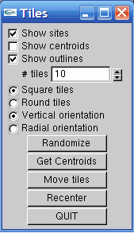

<!DOCTYPE HTML PUBLIC "-//IETF//DTD HTML//EN">
<html> <head>
<title>Tile-Spreading Software<title>
</head>

<body>
<h1>Tile-Spreading Software</h1>
Here's a minimal set of software that implements my
mosaic-tile algorithm.  The algorithm works as follows:
<ul>
  <li>Initially, place tile sites at random.
      <p>
  <li>Compute the voronoi region for each site.  This is done by
      drawing a uniquely-colored cone with apex at each site.  Then,
      the camera renders all the cones from overhead.
      <p>
  <li>Repeat until converged:
      <p>
      <ol>
	<li>Compute the centroid of each voronoi region.
	<li>Move each site to its region's centroid.
	<li>Re-compute the voronoi regions.
      </ol>
</ul>
<p>
The user interface looks like this:
<p>

<p>
Controls:
<ul>
  <li>Show sites: toggles display of the sites.
  <li>Show centroids: toggles display of the centroids.  Initially,
      centroids and sites are in the same places.
  <li>Show outlines: toggles display of the tile boundaries.
      <p>
  <li># tiles : choose up to 1000 tiles.
  <li>Square/Round : chose a tile shape.
  <li>Vertical/Radial : chose a tile orientation pattern.
      <p>
  <li>Randomize: set the initial tile sites randomly.
  <li>Get Centroids : compute the centroid of each voronoi region.
  <li>Move Tiles : do one iteration.
  <li>Recenter : Do (Get Centroids, Move Tiles) in one step.
</ul>

To try the software:
<ol>
  <li>choose 100 tiles
  <li>click "Randomize"
  <li>Turn on the centroids
  <li>click "Get Centroids" to see the new tile positions.
  <li>click "Move Sites" to actually move the tiles.
  <li>click "Recenter" until things stop moving.
</ol>

<h3>Source Code</h3>
<ul>
<li> <a href=main.cpp>main.cpp</a> : main program.
    <p>
<li> <a href=minitiles.h>minitiles.h</a> : some constants.
    <p>
<li><a href=Canvas.h>Canvas.h</a> and
    <a href=Canvas.cpp>Canvas.cpp</a> :
    draws cones, tiles, sites, and outlines.
    <p>
    
<li> <a href=Colour.h>Colour.h</a> and
    <a href=Colour.cpp>Colour.cpp</a> :
    an RGB triplet.
    <p>

<li> <a href=ColourSet.h>ColourSet.h</a> and
    <a href=ColourSet.cpp>ColourSet.cpp</a> :
    a hashtable of colors.  This is needed to speed up the computation
    of the centroids.  Each hash entry stores a (color, region-ID)
    pair.
    <p>

<li> <a href=Hash.h>Hash.h</a> : template hash table class.
    <p>
    
<li> <a href=Image.h>Image.h</a> and
    <a href=Image.cpp>Image.cpp</a> :
    an RGBA image, storable as a PPM file.
    <p>

<li> <a href=Point2.h>Point2.h</a> and
    <a href=Point2.cpp>Point2.cpp</a> :
    a 2D point.
    <p>
    
<li> <a href=Tiling.h>Tiling.h</a> and
    <a href=Tiling.cpp>Tiling.cpp</a> :
    the tile sites, orientations, centroids, and voronoi region
    colors.  This is where the all-important
    <b>computeCentroids</b> method is defined.
    <p>
<li> <a href=ui.cpp>ui.cpp</a> : User interface.  Uses the <a
    href=http://www.cs.unc.edu/~rademach/glui/>GLUI</a> library.
    <p>
<li> <a href=minitiles.zip>minitiles.zip</a> : All these source files
    in an archive.
</ul>    


<hr>
<address><a href="http://www.cs.unh.edu/~ah/">Alejo Hausner</a>,
 <a href="http://www.cs.unh.edu/">Dept of Computer Science</a>,
<a href="http://www.unh.edu/">University of New Hampshire</a></address>
<!-- hhmts start -->
Last modified: Thu Mar  2 23:48:57 EST 2006
<!-- hhmts end -->
</body> </html>
